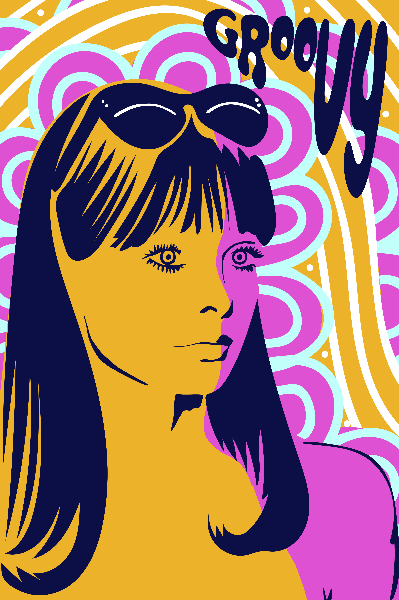
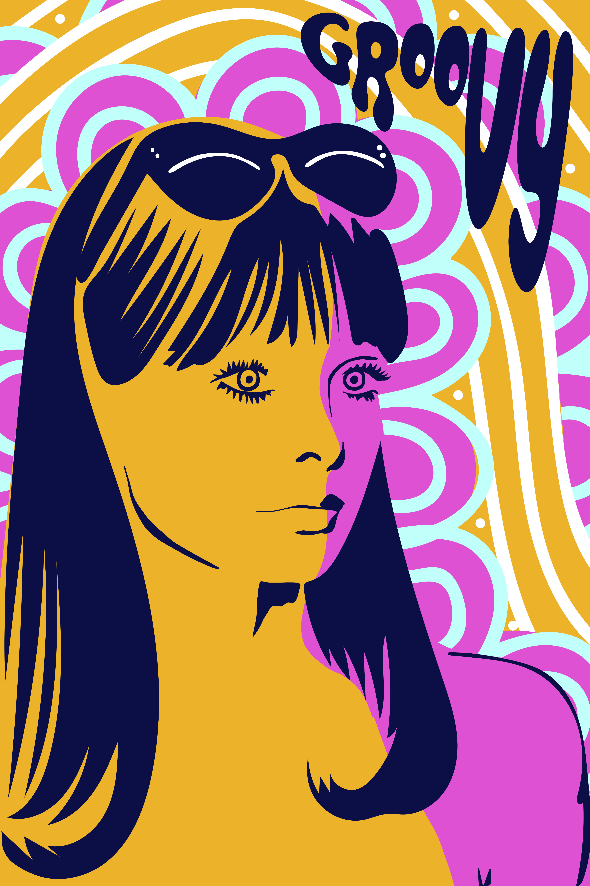

Color & Melange

 

Color & Melange combination posters, 8" x 10"
For this project, students were asked to research and define a list of words provided by the professor. Students had to choose a word from the given list to work with for this assignment. The objective was to create 3 different posters (not variations) that thematically translated (interpreted, made a connection of meaning with) their chosen word in relation to another concept of their choice. The students could define the word and concept of choice by any means: analogy, parody, contradiction...[...]
Limitations were imposed on each poster, and they are outlined below:
Poster #1: Use type only
Poster #2: Use image only
Poster #3: Use a combination of type + image
Given words: * bricolage, convergence, denotation, dissonance, hybrid, hyperbole, isomorphic, kitsch, lexicon, mélange, metonymy, mnemonics, modularity, morphology, nascent, nonlinearity, pastiche, polysemy, simulacrum, tautological, vernacular, zeitgeist*
For my posters, I decided to choose the word "melange" in relation with color. I created three different posters interrelating these concepts, one type, one image, and one combined type & image.
Mélange- a mixture; a medley.: "a melange of tender vegetables and herbs"